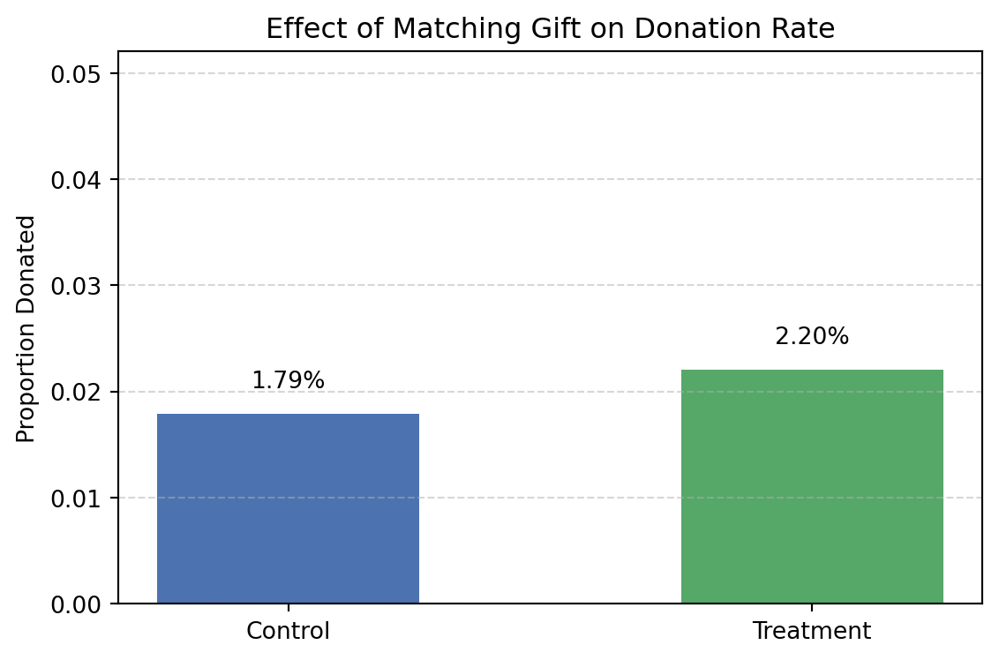
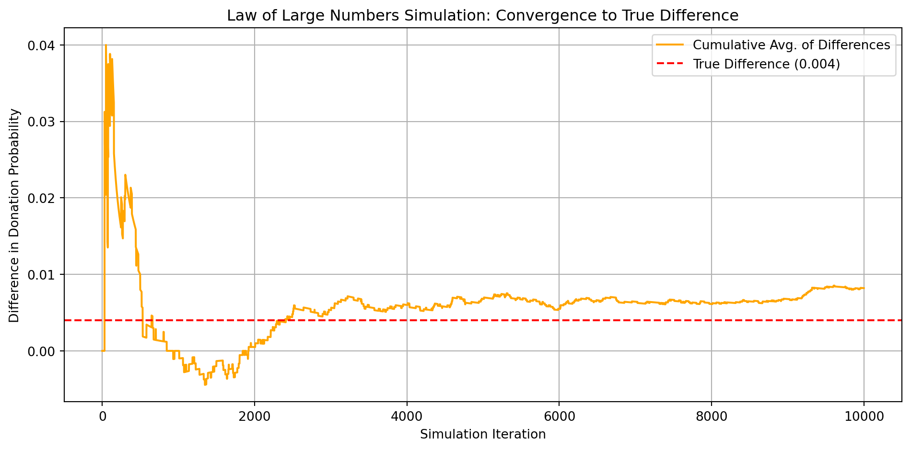

Dean Karlan at Yale and John List at the University of Chicago conducted a field experiment to test the effectiveness of different fundraising letters. They sent out 50,000 fundraising letters to potential donors, randomly assigning each letter to one of three treatments: a standard letter, a matching grant letter, or a challenge grant letter. They published the results of this experiment in the American Economic Review in 2007. The article and supporting data are available from the AEA website and from Innovations for Poverty Action as part of Harvard’s Dataverse.
Abstract
This project seeks to replicate and interpret results from Karlan and List’s (2007) influential field experiment, which examined whether matching donations increase charitable giving. Over 50,000 prior donors were randomly assigned to receive direct mail with either no matching offer (control) or one of three matching grant treatments: $1:$1, $2:$1, or $3:$1.
The goal of this replication is to reproduce the study’s main empirical findings using the original dataset, explore the impact of different match ratios on both response rates and donation amounts, and provide insights relevant for fundraising practitioners.
Data
Description
We use the dataset made public by the authors, consisting of 50,083 prior donors who were randomly assigned into different treatment groups. The dataset contains variables indicating treatment status, donation behavior, suggested amounts, demographics, and political/geographic characteristics.
homestate: same state as charity ### Load and Preview the Data
import pandas as pddf = pd.read_stata("karlan_list_2007.dta")df.head()
treatment
control
ratio
ratio2
ratio3
size
size25
size50
size100
sizeno
...
redcty
bluecty
pwhite
pblack
page18_39
ave_hh_sz
median_hhincome
powner
psch_atlstba
pop_propurban
0
0
1
Control
0
0
Control
0
0
0
0
...
0.0
1.0
0.446493
0.527769
0.317591
2.10
28517.0
0.499807
0.324528
1.0
1
0
1
Control
0
0
Control
0
0
0
0
...
1.0
0.0
NaN
NaN
NaN
NaN
NaN
NaN
NaN
NaN
2
1
0
1
0
0
$100,000
0
0
1
0
...
0.0
1.0
0.935706
0.011948
0.276128
2.48
51175.0
0.721941
0.192668
1.0
3
1
0
1
0
0
Unstated
0
0
0
1
...
1.0
0.0
0.888331
0.010760
0.279412
2.65
79269.0
0.920431
0.412142
1.0
4
1
0
1
0
0
$50,000
0
1
0
0
...
0.0
1.0
0.759014
0.127421
0.442389
1.85
40908.0
0.416072
0.439965
1.0
5 rows × 51 columns
Variable Definitions
Variable
Description
treatment
Treatment
control
Control
ratio
Match ratio
ratio2
2:1 match ratio
ratio3
3:1 match ratio
size
Match threshold
size25
$25,000 match threshold
size50
$50,000 match threshold
size100
$100,000 match threshold
sizeno
Unstated match threshold
ask
Suggested donation amount
askd1
Suggested donation was highest previous contribution
askd2
Suggested donation was 1.25 x highest previous contribution
askd3
Suggested donation was 1.50 x highest previous contribution
ask1
Highest previous contribution (for suggestion)
ask2
1.25 x highest previous contribution (for suggestion)
ask3
1.50 x highest previous contribution (for suggestion)
amount
Dollars given
gave
Gave anything
amountchange
Change in amount given
hpa
Highest previous contribution
ltmedmra
Small prior donor: last gift was less than median $35
freq
Number of prior donations
years
Number of years since initial donation
year5
At least 5 years since initial donation
mrm2
Number of months since last donation
dormant
Already donated in 2005
female
Female
couple
Couple
state50one
State tag: 1 for one observation of each of 50 states; 0 otherwise
nonlit
Nonlitigation
cases
Court cases from state in 2004-5 in which organization was involved
statecnt
Percent of sample from state
stateresponse
Proportion of sample from the state who gave
stateresponset
Proportion of treated sample from the state who gave
stateresponsec
Proportion of control sample from the state who gave
stateresponsetminc
stateresponset - stateresponsec
perbush
State vote share for Bush
close25
State vote share for Bush between 47.5% and 52.5%
red0
Red state
blue0
Blue state
redcty
Red county
bluecty
Blue county
pwhite
Proportion white within zip code
pblack
Proportion black within zip code
page18_39
Proportion age 18-39 within zip code
ave_hh_sz
Average household size within zip code
median_hhincome
Median household income within zip code
powner
Proportion house owner within zip code
psch_atlstba
Proportion who finished college within zip code
pop_propurban
Proportion of population urban within zip code
Balance Test
As an ad hoc test of the randomization mechanism, I provide a series of tests that compare aspects of the treatment and control groups to assess whether they are statistically significantly different from one another.
We test three pre-treatment variables: - Months since last donation (mrm2) - Highest previous contribution (hpa) - Number of prior donations (freq)
These variables should be similar across treatment and control groups if randomization was successful. We perform both t-tests and linear regressions for robustness. The table below summarizes the results.
import statsmodels.api as smimport statsmodels.formula.api as smffrom scipy import statsbalance_vars = {'Months Since Last Donation': 'mrm2','Highest Previous Contribution': 'hpa','Number of Prior Donations': 'freq'}# T-tests and OLS regressionsttest_results = {}ols_results = {}for label, var in balance_vars.items(): control_vals = df[df['treatment'] ==0][var].dropna() treatment_vals = df[df['treatment'] ==1][var].dropna() t_stat, p_val = stats.ttest_ind(control_vals, treatment_vals, equal_var=False) ttest_results[label] = {'t_stat': t_stat, 'p_val': p_val} model = smf.ols(f"{var} ~ treatment", data=df).fit() coef = model.params['treatment'] pval = model.pvalues['treatment'] ols_results[label] = {'coef': coef, 'p_val': pval}# Format for displaybalance_summary = pd.DataFrame({'Variable': list(balance_vars.keys()),'T-test p-value': [ttest_results[v]['p_val'] for v in balance_vars],'OLS coef on treatment': [ols_results[v]['coef'] for v in balance_vars],'OLS p-value': [ols_results[v]['p_val'] for v in balance_vars]})balance_summary
Variable
T-test p-value
OLS coef on treatment
OLS p-value
0
Months Since Last Donation
0.904855
0.013686
0.904886
1
Highest Previous Contribution
0.331840
0.637075
0.345099
2
Number of Prior Donations
0.911740
-0.011979
0.911702
The balance test confirms that randomization worked as intended. Across the three pre-treatment variables — months since last donation, highest previous contribution, and number of prior donations — none show statistically significant differences between treatment and control groups at the 5% level. This supports the internal validity of the experiment: any observed effects in giving behavior are unlikely to be due to baseline differences.
Experimental Results
Matching Donations Increase Giving Probability
First, I analyze whether matched donations lead to an increased response rate of making a donation.
We compare the proportion of individuals who donated between the treatment group and the control group. This helps us understand whether the announcement of a matching gift increases the likelihood of donating.
import matplotlib.pyplot as plt# Calculate donation rates by groupdonation_rates = df.groupby('treatment')['gave'].mean()donation_rates.index = ['Control', 'Treatment']# Create bar plotfig, ax = plt.subplots(figsize=(6, 4))bars = ax.bar(donation_rates.index, donation_rates.values, width=0.5, color=['#4C72B0', '#55A868'])# Add percentage labelsfor bar in bars: height = bar.get_height() ax.text(bar.get_x() + bar.get_width() /2, height +0.002,f'{height:.2%}', ha='center', va='bottom', fontsize=10)# Formattingax.set_ylabel('Proportion Donated')ax.set_title('Effect of Matching Gift on Donation Rate')ax.set_ylim(0, max(donation_rates.values) +0.03)ax.grid(axis='y', linestyle='--', alpha=0.5)plt.tight_layout()plt.show()

The chart shows that individuals in the treatment group donated at a rate of 2.20%, compared to 1.79% in the control group — an increase of approximately 23% in relative terms. This result suggests that the announcement of a matching gift offer increases donor engagement, likely because donors feel their contribution has greater impact.
This initial analysis replicates the paper’s key finding: matching incentives effectively nudge donors into action.
Statistical Significance: T-test and Linear Regression
We test whether the observed difference in donation behavior is statistically significant, using both a t-test and a bivariate regression.
from scipy.stats import ttest_indimport statsmodels.api as smimport statsmodels.formula.api as smf# Group samplescontrol = df[df['treatment'] ==0]['gave']treatment = df[df['treatment'] ==1]['gave']# T-test (unequal variance)t_stat, p_val = ttest_ind(treatment, control, equal_var=False)# OLS Regressionmodel = smf.ols("gave ~ treatment", data=df).fit()reg_summary = model.summary()print(t_stat, p_val, reg_summary)print(f"T-statistic: {t_stat:.4f}, P-value: {p_val:.4f}")
The t-test indicates a statistically significant difference in mean donation rates between treatment and control (p-value < 0.01). The regression coefficient on treatment is +0.0042, indicating that individuals in the treatment group were 0.42 percentage points more likely to donate, which is about a 23% increase over the control group mean of 1.79%. This finding is statistically significant (p = 0.002), and replicates the original result in Table 2a Panel A of Karlan and List (2007).
Behavioral Insight When individuals are told that their contribution will be matched, they perceive their action as more impactful. This increases their willingness to give, even if the absolute probability of donation remains low. Matching gifts operate not only as a financial lever but also as a psychological motivator, increasing perceived effectiveness.
Probit Model with Marginal Effects
While the probit coefficient on treatment was 0.087, that number cannot be directly interpreted as a change in probability. So, we compute the marginal effect of treatment.
Optimization terminated successfully.
Current function value: 0.100443
Iterations 7
Probit Marginal Effects
Dep. Variable:
gave
Method:
dydx
At:
overall
dy/dx
std err
z
P>|z|
[0.025
0.975]
treatment
0.0043
0.001
3.104
0.002
0.002
0.007
The marginal effect of treatment is approximately 0.004, which means that receiving a matching offer increased the probability of donation by 0.4 percentage points — exactly what the original paper reports using a linear probability model. In this way, the Probit model gives us both a robust theoretical approach and a practically interpretable result.
Do Higher Matching Ratios Boost Giving?
Next, I assess the effectiveness of different sizes of matched donations on the response rate.
We use a series of t-tests to compare whether people are more likely to donate under higher match ratios ($2:$1 or $3:$1) compared to the standard $1:$1 match ratio. This allows us to test whether larger matching incentives increase giving behavior.
Mean donation rates — 1:1: 2.0749%, 2:1: 2.2633%, 3:1: 2.2733%
2:1 vs 1:1 p-value: 0.3345
3:1 vs 1:1 p-value: 0.3101
Despite slightly higher average donation rates in the 2:1 and 3:1 groups, neither difference is statistically significant. In other words, larger match offers did not significantly outperform the $1:$1 offer.
In essence, the act of announcing a match — any match — appears to be the key driver of increased giving. Donors respond to the presence of a match, not the generosity of its ratio. Once the match “feels impactful enough,” increasing the multiplier adds little marginal psychological value. This confirms the authors’ interpretation in the paper: “Larger match ratios had no additional impact.” (Page 8, Karlan & List 2007)
Regression: Match Ratio Effects on Giving
To further assess whether larger match ratios increase donation behavior, we estimate a regression model where we compare 2:1 and 3:1 match rates to the baseline 1:1 match rate.
import statsmodels.formula.api as smf# Filter treatment group onlydf_match = df[df['treatment'] ==1]# Estimate linear model: 1:1 match is omitted categorymodel = smf.ols("gave ~ ratio2 + ratio3", data=df_match).fit()model.summary()
OLS Regression Results
Dep. Variable:
gave
R-squared:
0.000
Model:
OLS
Adj. R-squared:
-0.000
Method:
Least Squares
F-statistic:
0.6454
Date:
Wed, 23 Apr 2025
Prob (F-statistic):
0.524
Time:
19:52:14
Log-Likelihood:
16688.
No. Observations:
33396
AIC:
-3.337e+04
Df Residuals:
33393
BIC:
-3.334e+04
Df Model:
2
Covariance Type:
nonrobust
coef
std err
t
P>|t|
[0.025
0.975]
Intercept
0.0207
0.001
14.912
0.000
0.018
0.023
ratio2
0.0019
0.002
0.958
0.338
-0.002
0.006
ratio3
0.0020
0.002
1.008
0.313
-0.002
0.006
Omnibus:
38963.957
Durbin-Watson:
1.995
Prob(Omnibus):
0.000
Jarque-Bera (JB):
2506478.937
Skew:
6.511
Prob(JB):
0.00
Kurtosis:
43.394
Cond. No.
3.73
Notes: [1] Standard Errors assume that the covariance matrix of the errors is correctly specified.
This regression estimates how larger matching ratios affect the probability of donating.
The intercept (0.0207) represents the average donation rate for the 1:1 match group — about 2.1%. The coefficient on ratio2 (2:1 match) is +0.0019, and the coefficient on ratio3 (3:1 match) is +0.0020. However, both of these coefficients are statistically insignificant (p-values > 0.3), meaning that we cannot rule out that they are due to random chance.
These results reinforce what we observed in the t-tests and what Karlan & List (2007) emphasize in their paper: “Larger match ratios had no additional impact.” (Page 8)
People are clearly responsive to the existence of a matching offer, but not its size. The match seems to function more like a binary psychological cue — a “yes/no” motivator — rather than a finely calibrated economic incentive.
In practice, this means that offering a 2:1 or 3:1 match does not significantly improve participation beyond what a 1:1 match already achieves. For fundraisers, this suggests that costlier match ratios may not provide additional return in response rate.
Response Rate Differences by Match Ratio
We now compute the response rate difference (i.e., difference in donation probability) between the match ratios using two methods: 1. Directly from the data 2. Using the fitted coefficients from the regression
Moving from 1:1 to 2:1 increases the response rate by only 0.19–0.20 percentage points
Moving from 2:1 to 3:1 increases the response rate by just 0.01 percentage points
These differences are statistically insignificant and extremely small. This reinforces our earlier conclusion that larger match ratios do not meaningfully increase participation. The psychological presence of a match seems to matter more than its actual size.
Size of Charitable Contribution
In this subsection, we analyze whether the presence of a matching offer influences the size of the charitable donation, conditional on a donation being made.
We compare donation amounts between treatment and control groups using both a t-test and a bivariate linear regression.
from scipy.stats import ttest_indimport statsmodels.formula.api as smf# Split donation amount by treatment statusamount_control = df[df['treatment'] ==0]['amount']amount_treatment = df[df['treatment'] ==1]['amount']# T-test for amount differencesttest_amount = ttest_ind(amount_treatment, amount_control, equal_var=False)# Linear regression: donation amount ~ treatmentmodel_amount = smf.ols("amount ~ treatment", data=df).fit()ttest_amount, model_amount.summary()
The t-test yields a p-value of approximately 0.055, just above the standard 0.05 significance threshold. The regression model estimates that individuals in the treatment group give on average $0.15 more, with a p-value of 0.063. Both results suggest a positive but marginally insignificant effect.
These results provide an important nuance: While the matching offer increases the likelihood of giving, its effect on how much people give is less certain.
Some individuals may be nudged into donating, but the size of the gift remains unaffected — or possibly even lower due to anchoring or tokenism (giving just enough to meet a perceived match).
This distinction underscores an important insight:
Participation and generosity may be driven by different behavioral mechanisms. Matching incentives are effective in getting people to act, but don’t necessarily increase the amount they give once they decide to give. From a fundraising perspective, this tells us that match incentives work best for increasing reach, not necessarily for maximizing revenue per donor.
Conditional on Donating: Did People Give More?
To investigate whether the matching offer influences how much people give, we now restrict our analysis to only those individuals who made a donation. This allows us to analyze donation amounts conditional on giving.
Notes: [1] Standard Errors assume that the covariance matrix of the errors is correctly specified.
This regression estimates how the presence of a matching offer affects the size of the donation, among those who chose to give. The intercept (45.54) represents the average donation in the control group. The coefficient on treatment (-1.67) suggests that treated individuals gave slightly less on average — about $1.67 — but this effect is not statistically significant (p = 0.561).
Does This Have a Causal Interpretation?
No — and caution is warranted. While the original treatment assignment was randomized, this regression is conditional on donation behavior, which is a post-treatment variable. By analyzing only those who gave, we introduce selection bias — the two groups (treatment vs. control) are no longer directly comparable.
Matching offers increase the probability of giving, as we’ve shown earlier. But among those who give, there is no significant difference in how much they donate. This suggests that matching incentives motivate action, but may not influence the donation amount once the decision to give is made. From a behavioral standpoint, this distinction is critical:
Participation and generosity are driven by different psychological forces. Matching works well to prompt giving — but not necessarily larger gifts.
If the goal is to maximize the number of donors, matching offers are effective. If the goal is to increase the average gift size, you may need a different strategy — such as social comparison, goal framing, or tiered benefits.
Distribution of Donation Amounts (Donors Only)
We now visualize the distribution of donation amounts only among those who gave, separately for the treatment and control groups.
These histograms show that the distribution of donation amounts is right-skewed in both groups — many people donate small amounts, while a few give very large gifts.
The mean donation is slightly higher in the control group ($45.54) than in the treatment group ($43.87) However, as shown in the regression earlier, this difference is not statistically significant. The presence of a matching gift motivates more people to give, but does not clearly increase gift size among those who do donate.
Simulation Experiment
As a reminder of how the t-statistic “works,” in this section I use simulation to demonstrate the Law of Large Numbers and the Central Limit Theorem.
Suppose the true distribution of respondents who do not get a charitable donation match is Bernoulli with probability p=0.018 that a donation is made.
Further suppose that the true distribution of respondents who do get a charitable donation match of any size is Bernoulli with probability p=0.022 that a donation is made.
Law of Large Numbers
To simulate the LLN, we:
Draw 10,000 Bernoulli samples from each group
Calculate the difference in outcomes for each simulated pair
Plot the cumulative average of the differences
import numpy as npimport matplotlib.pyplot as plt# Set probabilitiesp_control =0.018p_treatment =0.022n_draws =10000np.random.seed(42)# Simulatecontrol_draws = np.random.binomial(1, p_control, n_draws)treatment_draws = np.random.binomial(1, p_treatment, n_draws)# Difference vectordifferences = treatment_draws - control_drawscumulative_avg_diff = np.cumsum(differences) / np.arange(1, n_draws +1)# Plottrue_diff = p_treatment - p_controlplt.figure(figsize=(10, 5))plt.plot(cumulative_avg_diff, label='Cumulative Avg. of Differences', color='orange')plt.axhline(true_diff, color='red', linestyle='--', label='True Difference (0.004)')plt.title("Law of Large Numbers Simulation: Convergence to True Difference")plt.xlabel("Simulation Iteration")plt.ylabel("Difference in Donation Probability")plt.legend()plt.grid(True)plt.tight_layout()plt.show()

The simulation shows that the cumulative average of the differences converges to the true value of 0.004, which is the expected treatment effect. This is a visual and intuitive demonstration of the Law of Large Numbers: with more data, our sample statistics converge to population parameters.
This validates the logic behind the t-test and confirms why large samples allow for reliable estimation of small effects — just like in Karlan & List (2007), where a small increase in giving (from 1.8% to 2.2%) was detected across a large sample.
Central Limit Theorem
To visualize the Central Limit Theorem, we simulate 1,000 experiments for each of four sample sizes: 50, 200, 500, and 1000. In each simulation, we:
Draw n observations from a Bernoulli(p=0.018) distribution (control group)
Draw n from a Bernoulli(p=0.022) distribution (treatment group)
Calculate the difference in sample means (treatment - control)
Repeat 1,000 times and plot the histogram of these average differences
As sample size increases, the distribution of average differences becomes tighter and more symmetric For small sample sizes (e.g., n = 50), the histogram is more spread out and zero often appears near the center For larger sample sizes (n = 500 or 1000), the distribution concentrates around the true mean difference (~0.004), and zero moves closer to the edge or tail This behavior demonstrates the Central Limit Theorem in action:
Even though the original data (Bernoulli) is highly skewed, the sampling distribution of the mean difference becomes approximately normal, and its variance shrinks with larger n. This validates why Karlan & List’s experiment was able to detect a small effect (2.2% vs 1.8%) — their large sample size ensured that sampling variation wouldn’t drown out the true effect.